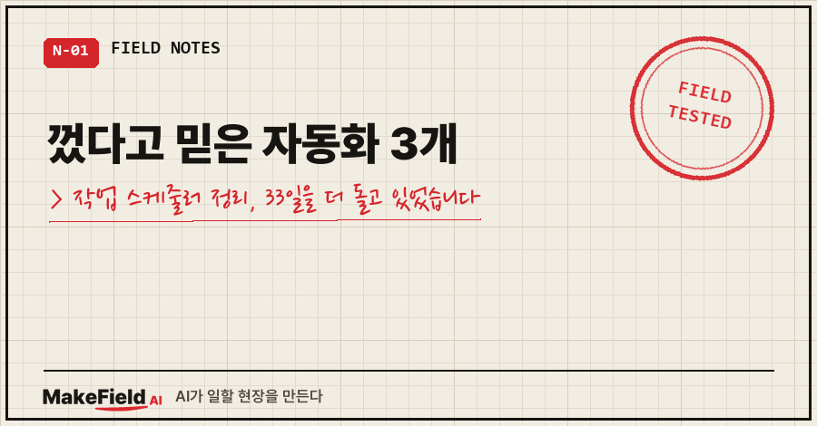
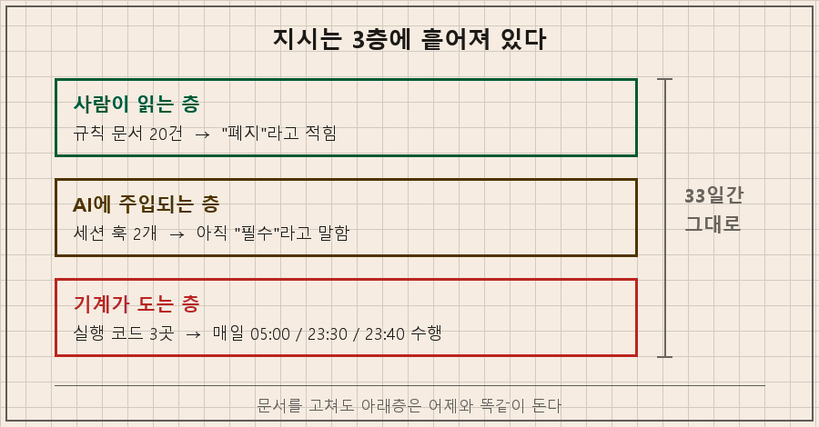
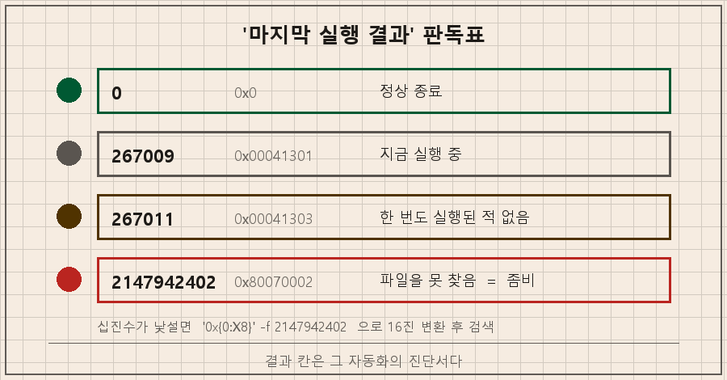
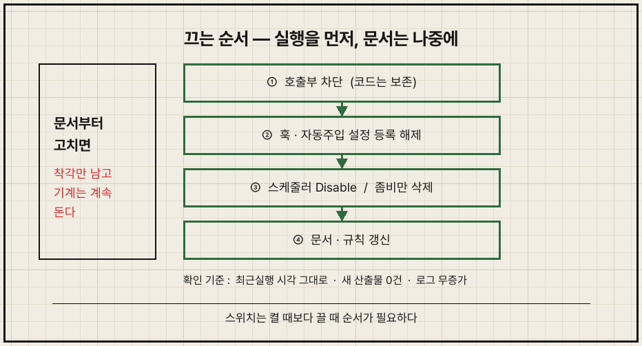

한 달 전에 끈 줄 알았던 자동화가, 어젯밤에도 제 PC에서 멀쩡히 돌고 있었습니다.
지시는 분명히 내렸어요. 규칙 문서에도 적어뒀고요. 그런데 안 멈췄더라고요..
그래서 작업 스케줄러 정리를 처음부터 다시 했습니다.
답부터 적을게요.
자동화는 "그만해"라고 쓴 문서를 읽고 멈추지 않습니다. 실제로 멈추는 건 ①그걸 호출하는 코드 ②시작할 때 자동으로 끼어드는 설정·훅 ③OS 작업 스케줄러, 이 세 군데를 직접 열어봤을 때예요. 저는 문서만 고쳐놓고 33일을 흘려보냈습니다.
저는 현장 설비를 만지는 일로 15년쯤 살았어요.
새로 뭘 붙이는 것보다 안 쓰는 걸 떼어내는 쪽이 늘 더 어렵습니다. 배선 하나 걷어내려면 그게 어디까지 물려 있는지 전부 따라가 봐야 하잖아요.
개인 AI 자동화도 똑같더라고요.
전제부터 적어둘게요. 윈도우 10·11의 작업 스케줄러 기준이고, 아래 명령은 2026년 8월 기준 PowerShell에서 그대로 씁니다. 목록 조회는 일반 권한으로 되고, 끄거나 지우는 건 관리자 권한이 필요해요.
1. 문서에 "하지 마"를 스무 군데 적어도 안 멈춰요
7월 중순에 결정을 하나 했어요. 매일 문서를 클라우드 노트로 밀어 올리던 동기화를 그만 쓰기로요. 잘 돌긴 하는데 정작 제가 안 읽고 있었거든요.
그러고 나서 제가 한 일은 규칙 문서를 고친 거였어요. AI한테 "이제 안 한다"고 알려주려고요.
33일 뒤에 열어봤더니 상태가 이랬습니다.
- 규칙·지침 문서: "중지"와 "필수"가 파일마다 섞여서 남아 있음
- 세션 훅 2개: 작업을 시작할 때마다 "동기화는 필수"라고 AI한테 여전히 주입
- 실행 코드 3곳: 새벽 5시, 밤 11시 30분, 밤 11시 40분에 매일 실제로 동기화 수행
세 번째 줄이 제일 뜨끔했어요.
사람은 "그거 안 하기로 했지"라고 기억하는데, 코드는 그냥 하던 걸 계속하고 있었습니다.
그날 손댄 곳을 세어보니 문서 20건, 훅 2개, 실행 코드 3곳이었어요. 지시 한 줄이 이렇게 여러 겹으로 흩어져 있는 줄 저도 그때 알았습니다..

2. 지금 내 PC에서 도는 자동화, 한 줄로 다 꺼내는 법
작업 스케줄러 정리는 목록을 눈으로 보는 데서 시작합니다. GUI로 하나씩 클릭하면 놓쳐요.
PowerShell을 열고 이 한 덩어리를 그대로 붙여 넣으세요.
Get-ScheduledTask | Where-Object { $_.TaskPath -notlike "\Microsoft*" } |
ForEach-Object {
$i = $_ | Get-ScheduledTaskInfo
[PSCustomObject]@{
이름 = $_.TaskName
상태 = $_.State
최근실행 = $i.LastRunTime
결과 = $i.LastTaskResult
}
} | Sort-Object 최근실행 -Descending | Format-Table -AutoSize\Microsoft*를 빼는 게 요령이에요. 그걸 안 걸면 윈도우가 기본으로 깔아둔 작업 수백 개에 파묻혀서 정작 내가 만든 게 안 보입니다.
제 PC에서 나온 결과를 이름만 바꿔서 그대로 옮겨볼게요.
이름 상태 최근실행 결과
-------------------- -------- -------------------- ----------
매일_대시보드 Ready 2026-08-14 05:48:48 0
매일_블로그발행 Running 2026-08-14 05:30:30 267009
매일_영어레슨 Ready 2026-08-14 04:30:30 0
밤_점검 Ready 2026-08-13 23:10:10 0
예전에지운프로그램 Ready 2026-08-07 00:30:30 2147942402
그래픽드라이버_업데이트 Ready 1999-11-30 00:00:00 267011
도면엔진_점검 Disabled 2026-07-01 14:00:00 0한 화면에 놓고 보니 그제야 보이더라고요.
제가 만든 작업만 21개였습니다. 이 중에 어제 안 돈 것, 결과가 0이 아닌 것, 상태가 Disabled인 것부터 눈에 걸리기 시작했어요.
3. "마지막 실행 결과" 숫자는 이렇게 읽습니다
여기가 이 글에서 제일 써먹을 데가 많은 부분이에요.
결과 칸에 뜨는 십진수는 그 작업의 진단서입니다. 자주 만나는 값만 정리하면 이래요.
| 결과 값 | 16진수 | 뜻 | 내가 내리는 판단 |
|---|---|---|---|
| 0 | 0x0 | 정상 종료 | 정상 |
| 267009 | 0x00041301 | 지금 실행 중 | 조회 순간에 돌던 중, 정상 |
| 267011 | 0x00041303 | 한 번도 실행된 적 없음 | 등록만 되고 안 도는 작업 |
| 2147942402 | 0x80070002 | 지정된 파일을 찾을 수 없음 | 대상 프로그램이 사라진 좀비 작업 |
| 9009 | — | 명령을 못 찾음 | 경로·확장자·인코딩 문제 |
검색해도 안 나오는 십진수를 만나면 이렇게 16진수로 바꿔서 다시 찾으면 됩니다.
'0x{0:X8}' -f 2147942402 # → 0x80070002제 목록에서 2147942402가 뜬 건 제가 만든 것도 아닌 작업이었어요. 어떤 프로그램이 설치될 때 같이 등록해두고 간 예약 작업인데, 정작 실행할 파일은 지금 그 자리에 없습니다. 그래서 매번 "파일을 못 찾겠다"고 실패하면서도 조용히 다시 예약돼요.
1999년 날짜로 찍힌 267011짜리도 하나 있었고요. 등록만 되고 한 번도 안 돈 작업입니다.
이런 게 왜 문제냐면요.
얘들은 실패해도 아무한테도 안 알립니다. 로그는 쌓이고, 점검 도구는 매번 이걸 다시 읽고, 알람은 계속 울려요.
저는 7월 초에 일부러 세워둔 작업의 실패 기록이 매일 재스캔되면서 같은 알람이 1,232회 반복돼 있는 것도 그날 발견했습니다. 로그를 보관 폴더로 옮기고 해소 처리하니 미해결 0건이 됐고요.

4. 끄는 순서 — 지우지 말고 막으세요
여기서 순서를 틀리면 저처럼 33일을 날립니다. 제가 정리한 순서는 이래요.
1단계, 호출부부터 막습니다.
코드 자체를 지우지 않아요. 그 기능을 부르는 한 줄만 없애거나, 함수 맨 앞에 "그냥 돌아가라"는 가드를 한 줄 넣습니다. 나중에 왜 껐는지 근거가 코드에 남아야 하거든요.
2단계, 자동으로 끼어드는 설정과 훅을 뗍니다.
저는 작업 시작 스크립트의 리마인더 문구를 지우고, 설정 파일에 등록돼 있던 훅 하나를 등록만 해제했어요. 훅 파일 자체는 남겨뒀습니다.
3단계, OS 스케줄러를 내립니다. 관리자 권한 PowerShell이 필요해요.
# 일단 멈춰두기 (되살리기 쉬움)
Disable-ScheduledTask -TaskName "작업이름"
# 대상 프로그램 자체가 사라진 좀비만 완전 삭제
Unregister-ScheduledTask -TaskName "작업이름" -Confirm:$false되살릴 여지가 조금이라도 있으면 Disable까지만 합니다. 삭제는 대상이 아예 없어진 것만요.
4단계, 마지막에 문서와 규칙을 고칩니다.
순서가 거꾸로 보이시죠? 저도 문서부터 고쳤다가 당했어요. 문서를 먼저 손보면 "정리 끝냈다"는 기분만 생기고 기계는 그대로 돕니다. 실행을 먼저 끊고 기록은 나중에, 이게 그날 얻은 순서예요.

5. 진짜 멈췄는지 확인하는 방법
껐다고 믿는 게 이 사고의 원인이었으니, 확인 기준을 숫자로 정해뒀어요. 다음 날 아침에 셋만 봅니다.
| 확인할 것 | 방법 | 통과 기준 |
|---|---|---|
| 스케줄러가 안 돌았나 | 2장의 조회 명령 재실행 | 최근실행 시각이 어제 그대로 |
| 산출물이 안 생겼나 | 결과 저장 폴더 정렬 | 새 파일 0건 |
| 로그가 안 자랐나 | 로그 파일 크기·마지막 줄 | 어제 이후 추가 줄 없음 |
셋 중 하나라도 어긋나면 아직 어딘가에서 부르고 있는 겁니다. 그때는 2단계 훅을 다시 의심하면 대개 나와요.
이런 게 궁금하실 것 같아요
Q. 그냥 전부 삭제하면 안 되나요?
삭제는 되돌리기가 안 됩니다. 특히 코드를 지우면 "왜 껐는지"가 같이 사라져서, 몇 달 뒤에 똑같은 걸 또 만들어요. 저는 코드는 남기고 호출만 막는 쪽을 기본으로 씁니다. 완전 삭제는 대상 프로그램 자체가 이미 없어진 작업, 그러니까 결과가 0x80070002로 뜨는 것들에만 적용해요.
Q. AI한테 "이제 하지 마"라고 말해두면 안 지켜지나요?
그 대화 안에서는 지켜집니다. 문제는 자동으로 도는 것들이 대화 밖에 있다는 거예요. 스케줄러는 제가 잠든 시간에 코드를 실행할 뿐이라, 사람이 어디에 뭐라고 적어놨는지를 읽지 않습니다. 지시는 사람이 읽는 층, 실행은 기계가 읽는 층. 두 층을 따로 손봐야 해요.
정리하면, 제가 그날 배운 건 하나예요.
자동화를 만들 땐 스위치를 켜는 것만 신경 썼는데, 끄는 데도 순서가 필요하더라고요. 호출부, 훅, 스케줄러, 그리고 마지막에 문서.
위의 조회 명령 한 줄이면 30초 만에 내 PC 목록이 나옵니다. 저는 그날 3개를 내렸어요. 한 달 묵은 착각치고는 싸게 끝났습니다!
여러분 PC에는 지금 몇 개가 돌고 있고, 그중 마지막으로 결과를 열어본 게 몇 개인가요?
혼자 굴리는 자동화가 열 개를 넘어가면 관리가 또 하나의 일이 됩니다. 그 언저리에서 막히실 때 찾아오실 곳으로 makefield.ai를 열어두고 있어요.
태그: #작업스케줄러정리 #안쓰는자동화정리 #작업스케줄러오류 #마지막실행결과 #0x80070002 #윈도우자동화 #파워쉘 #자동화관리 #무인자동화 #파이썬자동화 #AI자동화 #AI에이전트 #AI로일하기 #현장엔지니어 #MakeFieldAI